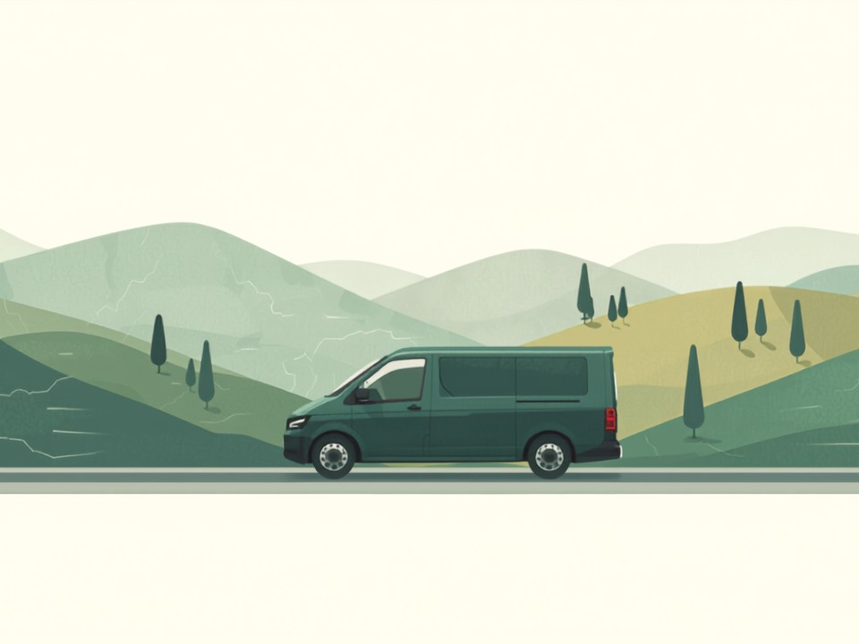
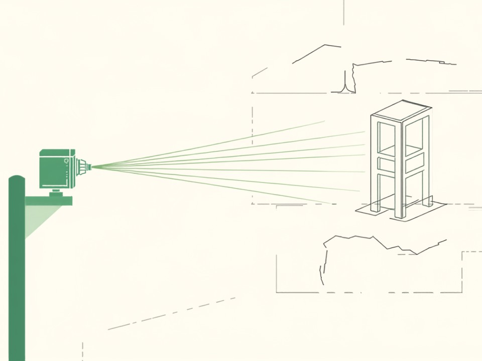
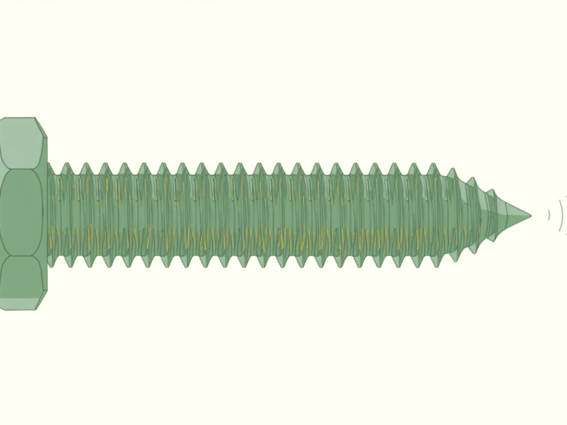
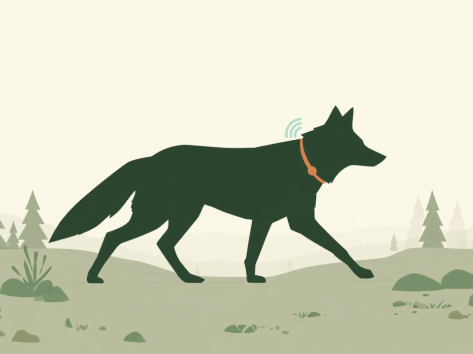

IA con los pies en el territorio.
Soluciones concretas y medibles, adaptadas a tu realidad — ya seas una pyme en Madrid o un emprendedor en la sierra de Ávila.
Formación y consultoría en IA para directivos y pymes. Resultados desde el primer día, sin tecnicismos.
Procesos automatizados con Claude, Copilot y Power Platform. Tu equipo hace más con menos esfuerzo.
Tecnología adaptada a la realidad de los negocios rurales. Presupuestos ajustados, resultados concretos.
Resúmenes públicos de algunos de nuestros proyectos, del territorio a la infraestructura crítica.

Transporte a la demanda para 62 municipios de la provincia de Ávila (más de 73.000 habitantes). Proyecto ejecutado internamente, sin subcontratar: dedicación exclusiva y claridad estratégica de principio a fin.

Dispositivo IoT que se acopla a infraestructuras públicas ya existentes para monitorizarlas y anticipar su mantenimiento. Combina sensores IoT, aprendizaje automático y un gemelo digital de la infraestructura para anticipar fallos antes de que ocurran, reduciendo drásticamente el coste de mantenimiento. Un concepto sin equivalente directo en el mercado.

Sensor embebido en un elemento de fijación estándar que monitoriza en tiempo real la integridad estructural de la instalación donde se coloca, con aplicación tanto civil como industrial.

Dispositivo IoT para el seguimiento de manadas de lobos, pensado para conciliar la conservación de la fauna con la seguridad del territorio rural.
Talleres prácticos para sacarle el máximo partido a Microsoft 365 con Copilot y Claude. Presenciales o remotos, con casos reales de tu sector.
Fórmulas, tablas dinámicas y análisis automatizado con Copilot, sin necesidad de saber programar.
Dirigido a: equipos administrativos y financieros
Pedir informaciónResúmenes de reuniones, redacción de correos y gestión de agenda asistida por IA.
Dirigido a: directivos y mandos intermedios
Pedir informaciónDe un borrador o unos datos a un documento o presentación lista para enviar, en la mitad de tiempo.
Dirigido a: equipos comerciales y de marketing
Pedir informaciónAutomatizar tareas, analizar documentos largos, generar contenido y apoyar decisiones con IA generativa, con casos reales del sector.
Dirigido a: directivos y equipos que quieran ir más allá de Office
Pedir informaciónConecta Outlook, Excel y SharePoint para eliminar tareas repetitivas con flujos automáticos apoyados en IA.
Dirigido a: equipos operativos y administrativos
Pedir informaciónPara lo que Copilot no llega: limpieza de datos complejos, fórmulas avanzadas y generación de informes completos a partir de grandes volúmenes de información, con Claude como analista de apoyo.
Dirigido a: perfiles que ya dominan Excel y quieren ir un paso más allá
Pedir informaciónUn negocio en Navaluenga puede automatizar sus presupuestos, atender clientes por WhatsApp con IA y gestionar su agenda con las mismas herramientas que usa una empresa de Madrid.
Este verano el fuego llegó hasta las puertas de Navaluenga. Vimos arder monte, casas y coches a apenas unos metros del lugar donde nació este proyecto. No lo contamos para pedir nada — lo contamos porque nos ha dejado clarísimo por qué hacemos lo que hacemos: este territorio no puede permitirse perder ni un negocio más. Eso es lo que nos mueve ahora, con más razones que nunca.
Chatbots para WhatsApp, web y teléfono que responden solos.
Reservas, agenda y presupuestos sin necesidad de personal dedicado.
Web, contenido y redes sociales gestionados con IA.
Talleres en tu propio negocio, con tus propios casos reales.
"Un pueblo con buena tecnología no tiene que envidiar nada a una capital. Solo necesita el socio adecuado." Jesús Trejo · Fundador, Talent-ia
Tanto si eres un directivo de PYME en Madrid como si tienes un negocio en la sierra de Ávila, te ayudamos a dar el primer paso con IA — concreto, sin rodeos y con resultados.